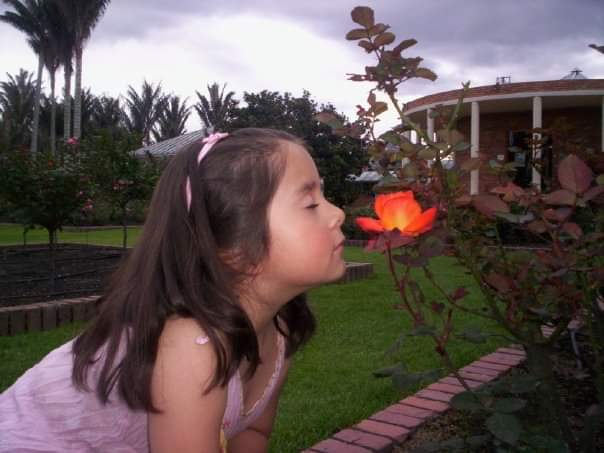
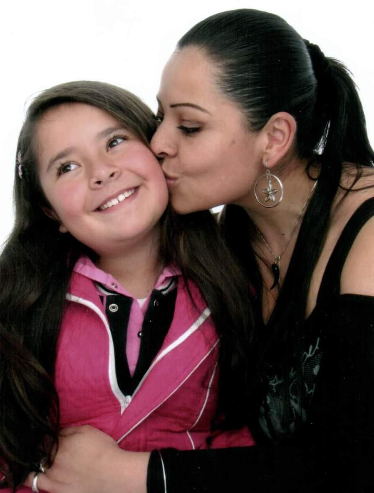

Retrato de tu nacimiento
En el momento de tu primera vista al mundo, estábamos tu, yo y algunos extraños, ni nuestros amigos ni familiares pudieron estar ahí, yo había soñado con tener una primera foto de las dos juntas en ese día, algo para capturar el momento y dejarte un recuerdo. No habían cámaras ese día, sin embargo, todo quedó grabado en mi corazón, cada detalle, cada momento, cada sensación…
Hoy te escribo esto porque te lo debo, ¡te debo tanto hija mía! hace mucho quería hacerlo, pero siempre lo dejé pasar.
Esta mañana fui, otra vez, a verte dormir en tu camita; siempre me ha cautivado ese momento de tu día: veo el movimiento de tus ojos
bajo los párpados cerrados y una que otra sonrisa. Siempre duermes con la boquita cerrada y tus mejillas están
suavemente coloreadas con el rosado de la vida. No puedo alcanzarte ni en sueños, pero me deleito siendo testigo de la magia que
brota en las señales de tu cuerpo mientras tú los vives. Siempre me pareces lo más cercano que he visto a los ángeles que aprendí
a imaginar en mi niñez, eres mi ángel personal, mi mayor tesoro. Hoy cuando te vi, te besé suavemente y me devolviste el beso entre
sueños, luego sonreíste, te giraste en tu cama y seguiste durmiendo. Todo lo que viene de ti es tan mágico y hermoso que sentí que
tenía que escribir en ese preciso momento y pensé que era el momento perfecto para regalarte un recuerdo del día de tu nacimiento!
Esta es la foto que se quedó en mi corazón ese maravilloso día…
Cuando naciste mi pequeña yo no sabía mucho al respecto de maternidad, ni embarazos, ni lactancia, ni mucho menos de crianza, aún hoy no se mucho de la literatura del tema. Quedé embarazada de ti a mis 18 años, me enteré de mi embarazo cuando tenías un poco más de 4 meses en mi interior, y naciste antes de cumplir 8 meses en mi vientre, esto se resume con que tuve un embarazo consciente de tres meses y medio, muy poco tiempo para una etapa tan maravillosa y única, más porque esos meses estuvieron empañados con las sombras de lo que es ser madre soltera tan joven en una sociedad en donde es más fácil señalar, juzgar y condenar la ignorancia, que levantar la voz para protestar con los responsables de cultivarla o hacer algo para combatirla…
Siempre te he vivido y te he sentido como un regalo: el más maravilloso y mágico regalo que me dio la vida, y no es sólo por el impresionante ser humano que resultaste ser, sino porque no tuve tiempo de asimilar que vendrías a este mundo a través de mi cuerpo en este milagro tan hermoso del que las mujeres somos tan afortunadas partícipes a la vez por naturaleza y a la vez por gracia Divina. Sí, participé en el principio del milagro que eres, pero todo fue tan rápido y tan extraño que a veces no soy consciente de eso y sólo te veo como si fuera verdad el que la cigüeña te trajo… o como si tan solo Dios hubiese dejado al más dulce de sus angelitos en mis manos por un tiempo, a veces quiero creer que es para que yo te cuide, pero de repente tu eres tú, tan alegre, llena de esa magia impresionante, con el sonido de tu risa, con los abrazos y besos que llegan siempre en el momento perfecto, con tu ternura, con todo tu talento, con tus silencios, con tus lágrimas, con tus juegos, con tus chistes, con tus sueños, con tu voz, con tus manos que saben dar, con tu corazón que no conoce límites para amar y perdonar, con todo lo que me enseñas, de repente eres tú, solo tú, única e irrepetible y me demuestras que si Dios te dejó aquí, es sólo para que yo me salve del mundo, con el conocimiento que trajiste a mí de lo que verdaderamente importa: el amor, lo verdadero, lo natural, todo lo que tú le has regalado a mi vida!
Y bueno, te dejó aquí, naciste y naciste de mi cuerpo, te abriste paso por mi intimidad y entre mis piernas encontraste tu camino… entre el sudor, la sangre, los amnióticos fluidos, el dolor, la respiración agitada, la mirada de los extraños que nos acompañaron en ese momento, tu desnudez y la mía se encontraron en nuestro primer momento de complicidad con testigos, cuando sabíamos que nos teníamos la una a la otra en un mundo de siete mil millones de habitantes que estaban siendo indiferentes a ese momento, pero que era nuestro momento: el más bello, increíble y maravilloso momento! TU NACIMIENTO! La primera vez que te vi con los ojos de mi cuerpo, porque hacía algunos meses te veía con los ojos de mi corazón… tu nacimiento separó nuestros cuerpos, pero al mismo tiempo unió para siempre a nuestros corazones!
Siempre dije que el momento de tu nacimiento me permitió entender finalmente, profundamente, la diferencia entre amar y estar enamorada… cuando supe que estabas en mi vientre, en el preciso instante en que vi ese signo más en el resultado de los exámenes y fui consciente de que venías en camino, te amé infinitamente, absolutamente, de la única forma en la que se puede amar: sabía que podría dar la vida por ti sin pensarlo; sabía que tenía la fuerza y el poder para enfrentarme victoriosa en contra de todo el mundo, si era necesario, para que tu nacieras, para que conocieras este mundo, para que tuvieras la oportunidad de ser quien fueras, quien en su momento escogieras ser, durante el periodo que durara tu paso por aquí. Te amé lo necesario para dejar de temer a los juicios de la gente, te amé lo necesario para saber que lo lograríamos juntas, lo necesario para sonreír en medio de momentos difíciles, lo necesario para llorar abrazada a tu refugio: mi vientre, para tomar fuerzas y seguir adelante en un momento en que la soledad tenía un sentido diferente, no estaba sola en el mundo, estaba contigo, había un ángel en mi interior. Eso era amor, amor puro, al fin lo conocía, al fin podía experimentarlo con cada célula de mi cuerpo, con cada átomo y era algo tan grande que me hizo igual de grande, en ese momento me conecte con toda la vida en el Universo infinito y eterno, con toda la naturaleza con todo lo Divino y me sentí igual de infinita, igual de eterna, igual de divina, me sentí me entendí perfecta, productiva, fructífera, creativa, útil en lo que realmente es importante, me sentí la más hermosa, completa, viva, poderosa, entendí entonces el verdadero significado de la palabra “MUJER” y sentí un profundo agradecimiento por llevar ese título en mi vida, ¡Eso fue amarte…!
Pero después naciste, cuando vi tu cuerpo pequeñito y perfecto, mojado de mí, envuelto en mi sangre y en mi vida, en ese momento me enamoré de ti para siempre, ahora sabía lo que era estar enamorada. Nunca habrán suficientes palabras, ni las correctas, ni las más perfectas ni sabias que puedan explicar lo que se siente, haberte tenido sobre mi piel en ese momento, sobre mi pecho desnudo, con mis manos temblando por el miedo de hacerte daño; te veías tan pequeñita, tan frágil, te besé mil veces en un segundo hasta que el extraño de traje azul quirúrgico y tapabocas me regañó diciendo que te podía ahogar con tantos besos y nos separó nuevamente. Tu lloraste y yo no paré de bendecirte, de suplicar a Dios que siempre estuviera contigo protegiéndote, mientras te llevaban a la camilla contigua para secarte y envolverte en una sábana a falta de la pijamita que no tenías aún, que no pude obsequiarte hasta un par de días después de tu llegada al mundo. Yo en mi impotente posición sobre la mesa de cirugía y atada con esas bandas al metal que sostenía mis rodillas, supe que no siempre podría estar a tu lado aunque quisiera, supe que en algunos momentos estarías en las manos de otras personas, para bien o para mal, supe entonces que sólo Dios podría estar contigo siempre sin importar las circunstancias y le supliqué a viva voz, con el corazón en mi garganta, las lágrimas en mis mejillas y el alma saliendo de mi cuerpo, queriendo estar contigo, le supliqué que nunca se apartara de ti, que siempre te tuviera entre Sus brazos protegiéndote, que se mantuviera a tu lado… y siempre lo ha hecho! Todo lo que he logrado no lo logré yo, Dios me lo entregó para ti, para las dos…
Naciste mi niña y mi corazón saltaba como loco, me enamoré perdidamente de ti, el ángel que eras salió de mi vientre y en su lugar se posaron miles de mariposas que me hacían cosquillas cuando te veía, cuando te escuchaba, cuando pensaba en ti. Me enamoré perdidamente de tu perfección, de tus rasgos, de tu pureza, del color de tu piel, del tamaño de tu anatomía, del movimiento de tu nariz al respirar, de tus ojos abriéndose a la luz, de tu boquita en busca de mis senos, tu leche, tu alimento, me enamoré de tus manos perfectamente puras tocándome; las cosquillas en mi estómago, el corazón saltando de emoción, la incertidumbre, la mezcla de deseos debatiéndose entre llanto y risas, me quitaba el sueño y me cortaba la respiración, la voz sin control que salía de mi garganta bendiciéndote, mis ojos desorbitados saltando fuera de mi para alcanzarte hasta donde te llevaron en ese momento, así era como mi cuerpo enamorado de ti le cantaba a la vida una canción de agradecimiento... y amarte cada minuto a partir de ese momento es, ha sido, será, la continuación de esa melodía.
Así se dio ese perfecto día. Pasaron los días, los meses y los años y hoy en día me convenzo más de lo afortunada que he sido de tenerte en mi vida, de que este fue el mejor regalo, y de que sigue habiendo magia en todo lo referente a ti… Hoy tienes 11 años, 6 meses, 10 días y 5 horas de haber visto el mundo desde afuera de mi cuerpo, con 160 cms casi alcanzándome en altura, y por supuesto superándome en todos los demás aspectos, sigues siendo la maravilla que le recordó el sentido a mi existencia… sigues dándole nuevos significados a la palabras amor, mujer, felicidad, perfección, éxito, maravilla, enamorarse y vivir… Este es el retrato de tu nacimiento, pero más allá de eso, este es el retrato que la vida me regala a tu lado cada día desde que supe de tu existencia. Gracias mi hermosa princesa por transformar mi vida con tu presencia.
